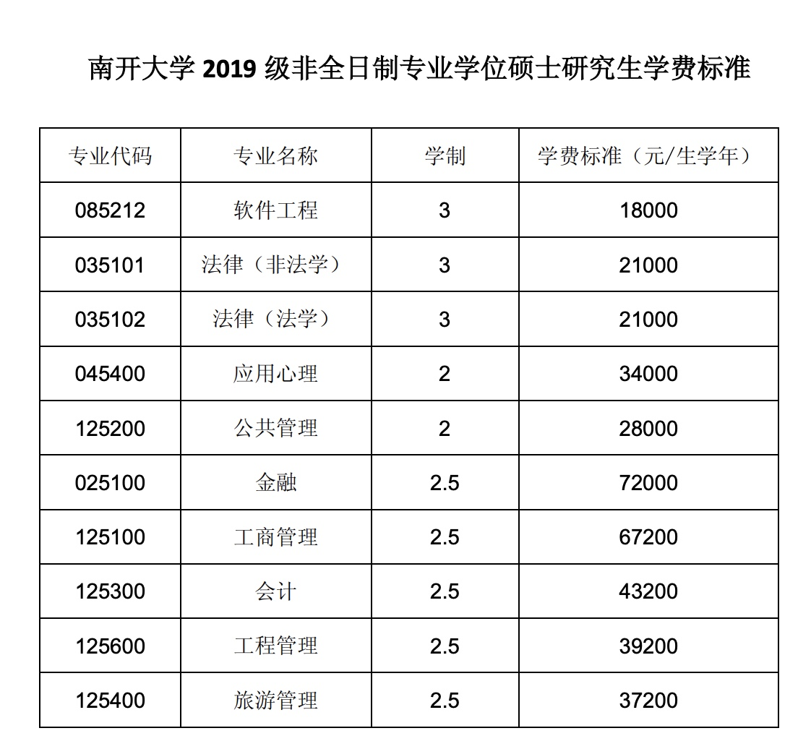

人大统计硕士笔记
本科的课程不够用，一直在自学统计学。苦于自己理论水平太差，2018年9月报考了人大统计学院的进修班，两年。
以下是一些记录：
报名
2019年9月报名，两年费用33000元。隔周上课，周六、日连续，上午9点-下午4点。 课程目录如下： 
第一堂课
上课地点在人大明德楼，教授是*。
笔记
考试
*参加考试
拿到研究生学位
有没有用
课堂没什么用，全靠自学。 学位的作用，目前还不清楚。
统计学（大数据应用及数据分析方向）课程安排： 根据我院全日制研究生培养方案学分要求，在职研究生开设课程包括：
题
库
课
程
类别
课程名称
学分
课程介绍
必修课
中国特色社会主义理论与实践
2
政治理论课
必修课
高等统计学(数理统计学)
3
目的在于使学生在原基础上，理解数理统计的基本概念，熟悉抽样分布理论，掌握参数估计的理论与方法、统计假设检验的主要方法、统计决策理论与Bayes分析，以及统计计算方法。
必修课
统计思想综述
2
统计学的方法论课程。统计学科的定义、核心和边界，理论要点。各种方法的前提假设与应用边界条件。
必修课
抽样技术与方法
3
主要介绍古典概率抽样方法，利用辅助信息基于线性模型的估计，二重抽样，最优抽样设计，无回答和计量误差等。
非
题
库
课
程
必修课
专业外语（英语）
3
语言基础、国考科目
必修课
马克思主义与社会科学方法论
1
政治理论课
必修课
《资本论》选读
3
本课程要求学生必修。讨论马克思《资本论》的对象、方法、结构和基本理论以及对研究当代经济问题的指导意义。
必修课
多元统计分析
3
本课程的内容包括多元回归分析，判别分析，聚类分析，主成分分析，因子分析，典型相关分析，结构方程模型，对应分析等。
必修课
数据挖掘方法与应用
2
通过课程教学和专题讨论，掌握数据挖掘常用方法的基本原理和方法特点，并能够运用数据挖掘软件解决数据挖掘的实际问题。
必修课
定性数据研究方法
2
本课程主要讲授定性数据的搜集方法和对定性数据的分析方法；主要内容有凯利表的数据采集与分析，焦点组技术、深访技术、文本分析等方法；课程的教学目的是掌握定性数据的研究方法并能够与定量技术结合使用。
必修课
统计预测
2
本课程主要包含如下内容：平稳序列建模及预测，波动性建模，协整和误差修正模型，向量自回归模型及面板数据建模。
必修课
宏观经济统计分析
2
主要是讲述中国宏观经济统计分析的内容，集理论、问题、数据、方法于一体，案例加体系的课程。
必修课
经济统计研究
3
以国民经济核算为起点做内容扩展，培养运用统计手段进行宏观经济观察分析的能力。
选修课
统计诊断
2
涉及的主要内容：回归异常点分析、残差分析、回归影响分析、数据变换及诊断、广义影响分析、多元回归诊断、其他广义模型诊断、拟合欠佳检验、非参数蒙特卡罗检验、实例分析等等。
选修课
市场研究
2
通过案例分析展现市场研究过程的各个步骤，运用数据分析解决市场营销管理的决策问题。
前沿讲座
资本存量估算研究
针对中国的综合环境经济核算实施与建模研究
全球化背景下中国对外经济统计与计量分析
环境经济核算国际经验追踪及环境会计研究
中国信息服务业发展与影响研究
中国金融账户及其影响初探
全球化背景下对外贸易统计方法的改进
中国外资经济的环境效应分析
注：课程设置按当年最新培养方案及教学计划为准。